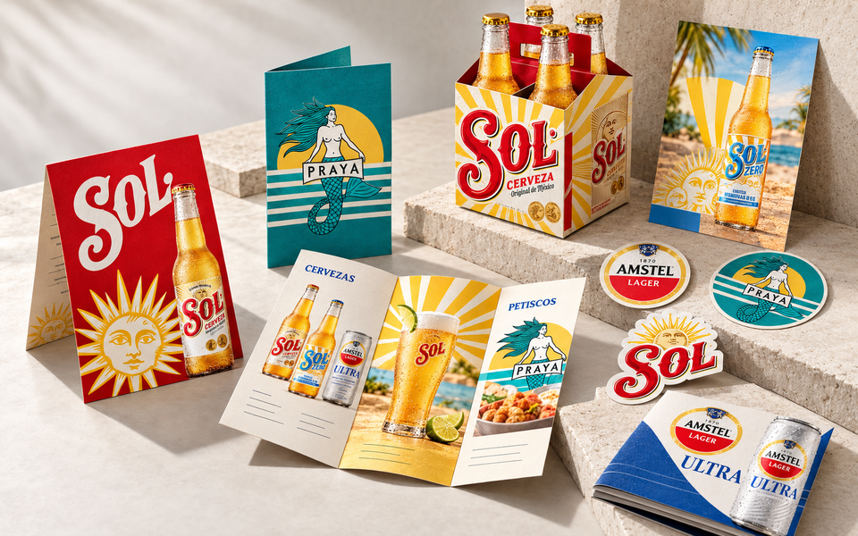
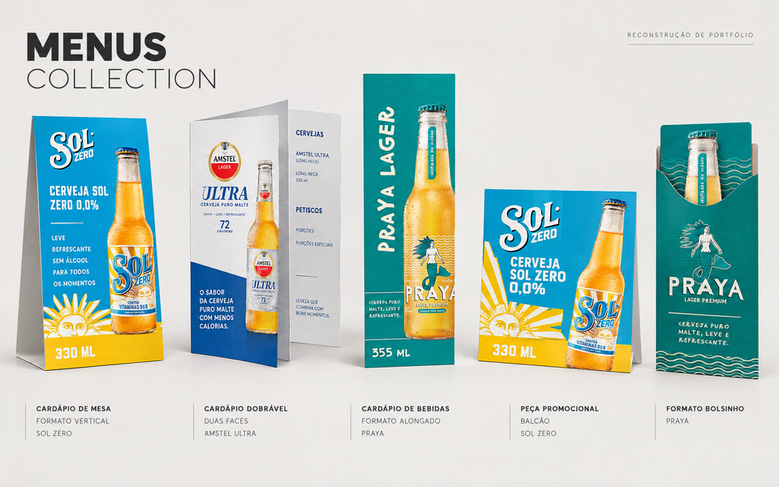
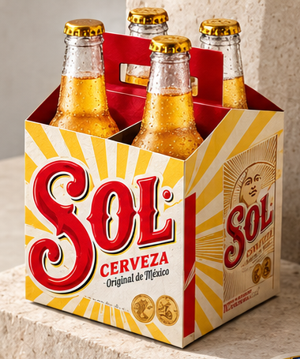
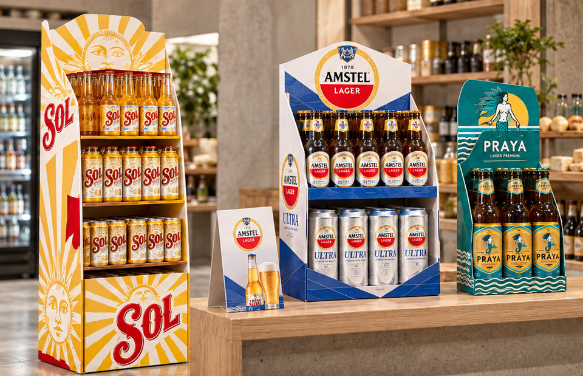
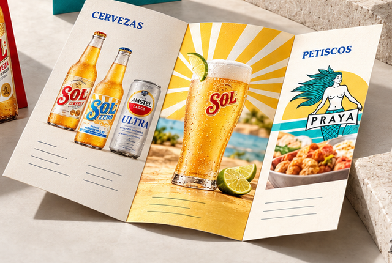
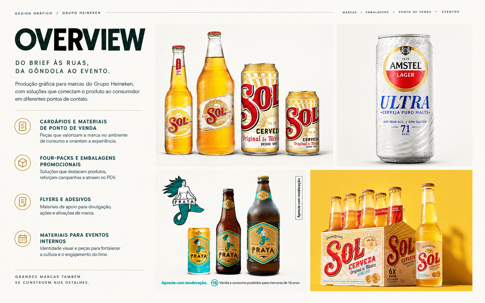
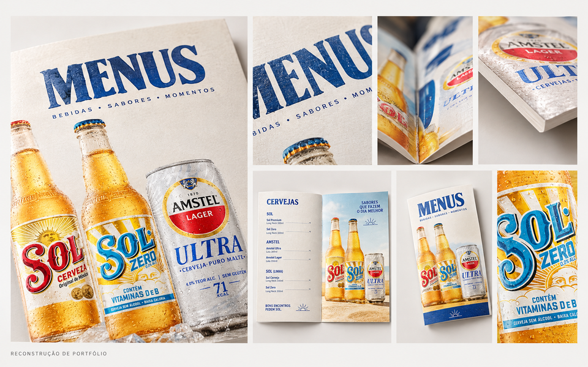
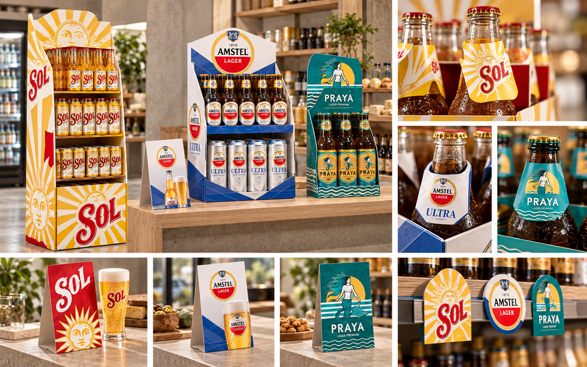

04 / Graphic design · Brand applications
Heineken Group
Recognisable identities. Different formats. Care in every application.
Sol · Sol Zero · Praya · Amstel Ultra

01 / Context and contribution
Different brands.
The same care.
As a marketing assistant at Dama Criativa, I supported design and graphic production requests for Heineken Group brands. The scope included menus, point-of-sale materials, packaging adaptations and promotional print.
The challenge was to organise communication across different formats and situations while respecting the visual codes of Sol, Sol Zero, Praya and Amstel Ultra. My contribution focused on creating and adapting materials and supporting their preparation.
02 / Menu collection
One language.
Many ways to read.
From tabletop pieces to tall formats, the application changes with the surface. The focus is information hierarchy, legibility and brand presence in the setting where the product is consumed.




The reconstructed boards contain illustrative text and labels. The supplied Amstel Ultra visuals mix Amstel Lager elements and show inconsistent 71/72 calorie figures. These elements are not presented here as official product specifications.
03 / Packaging and four-packs
Another dimension
for the brand.
Graphic packaging adaptations call for continuity across surfaces, considered focal areas and a clear reading of the products as a group.
The Sol four-pack illustrates this part of the scope: applying graphics to an existing format. This is a conceptual visualisation; it does not claim authorship of the label or document structural design, a production dieline or manufacture.


04 / Point-of-sale materials
Presence at the
point of contact.
Displays, counter communication and tabletop pieces bring the identity into a physical setting. The scene below explores how Sol, Amstel Ultra and Praya graphics could coexist at a point of sale.



05 / Print and supporting communication
Small formats.
A coherent collection.
Flyers, stickers and folded pieces extend the brands across more touchpoints. The editorial composition brings these formats together to show relationships in scale, colour and finish.
Internal events
Supporting materials for internal events form part of the reported scope of this experience. This selection contains no specific event documentation; the print mockup illustrates formats without depicting an event that took place.
06 / Execution and outcomes
From format
to finish.
Graphic execution connects the request to its final surface. This selection is presented through three considerations that guide that work.
Understand the context
Organise the message, format and touchpoint for each marketing request.
Adapt consistently
Adjust composition, hierarchy and scale to each brand’s visual codes and the available space.
Prepare and review
Support artwork preparation by checking legibility, margins, alignment and consistency across applications.
Qualitative outcome
Versatility
with consistency.
The selection demonstrates the ability to work across brands, formats and communication needs: from menus to promotional print, with attention to composition and detail.
This is a qualitative reading of the work shown. I did not have access to campaign analytics and make no claims about sales, reach or conversion results.
Supporting boards
All five supplied images remain available in their complete compositions. Open any image to enlarge it; the main case study text lives on the website for accessible reading on every screen.
Explore the five complete images







Brand fidelity: the supplied raster images do not replace production artwork or official files. Volume, composition, alcohol content, calories and other label text have not been validated as product data. Original pixels have been preserved; curation changes only framing and scale. Brand names and identities belong to their respective owners.